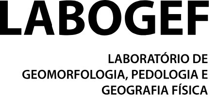
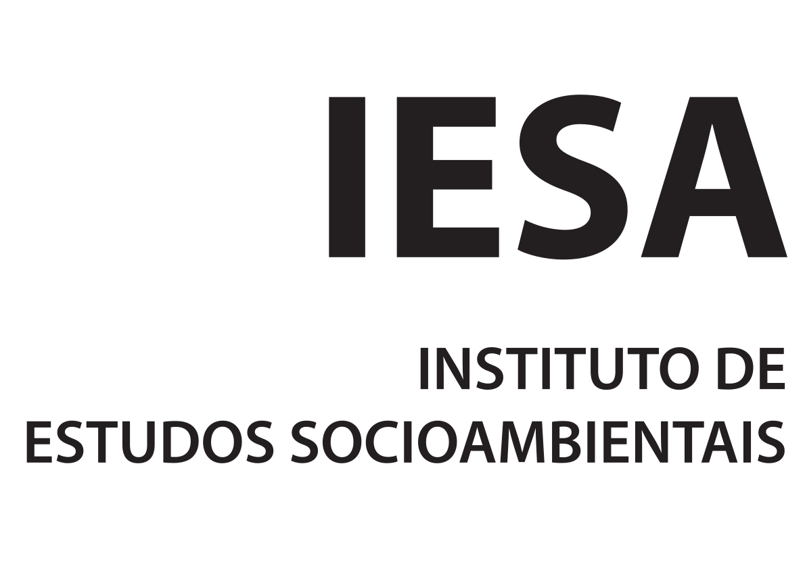

Explore o acervo
Consulte os trabalhos cadastrados por autoria, ano, instituição, tema e tipo de produção. Os quantitativos se referem à base organizada, sem pretensão de representar toda a produção científica da área.
Teses e dissertações
Consultar catálogoArtigos, livros e capítulos
Consultar publicaçõesVínculos documentais na rede acadêmica
Explorar relaçõesSobre a base
O Observatório reúne registros bibliográficos selecionados para análise da produção em Geoecologia das Paisagens. A consulta de teses e dissertações inclui filtros temáticos, gráficos e distribuição institucional por unidade federativa. A rede de filiação representa exclusivamente vínculos identificados no acervo.
Palavras-chave em atualização: nos artigos, livros e capítulos, somente são exibidas palavras-chave originais ou termos de indexação quando documentados na planilha. A ausência de termos não impede a consulta por título, autoria ou ano.
Organização e vinculação institucional
O Observatório articula atividades de pesquisa e sistematização bibliográfica vinculadas às seguintes instâncias acadêmicas:

LABOGEFLaboratório de Geomorfologia, Pedologia e Geografia Física
IESAInstituto de Estudos SocioambientaisOrganização: Prof.ª Dr.ª Karla Maria Silva de Faria
Atualização e critérios
O catálogo é passível de revisão, inclusão de registros e verificação de metadados. A origem das buscas e a situação da conferência das palavras-chave são preservadas na base de publicações.
LABOGEF/UFG · Versão de publicação: outubro de 2026.